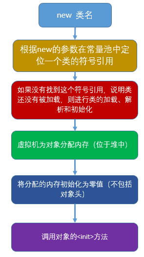
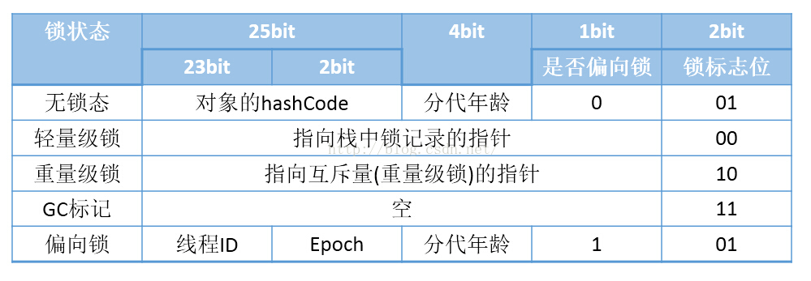
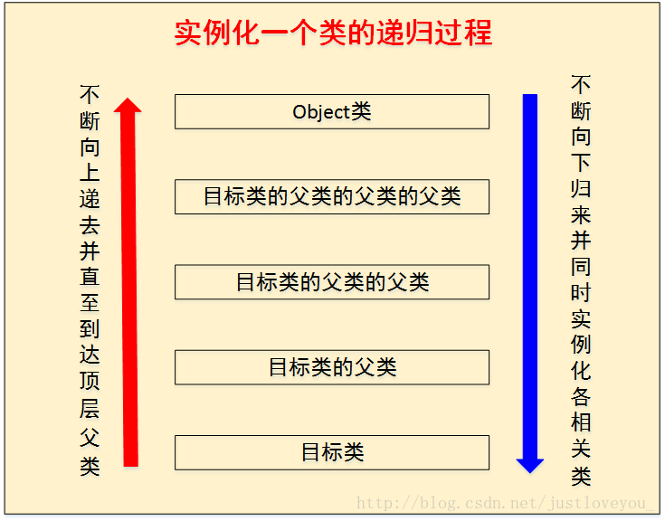
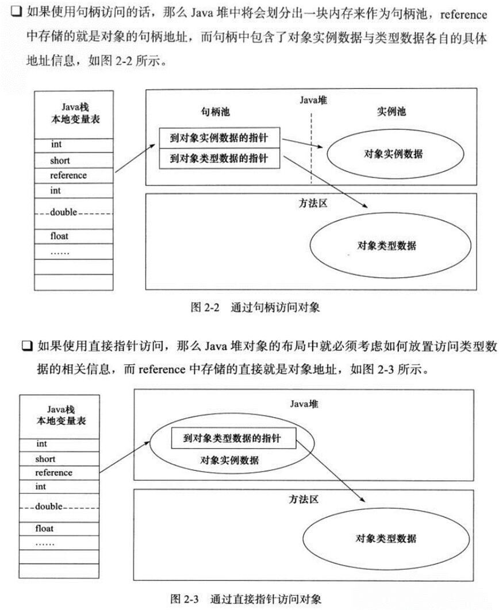

在前几篇博客中，我们探究了.class文件的本质，类的加载机制，JVM运行时的栈帧结构以及字节码执行时对应操作数栈以及局部变量表的变化。
如果你已经掌握了这些东西，你现在应该会有一种感觉，给你一个Java代码，你可以从JVM的层面上将这个类从javac编译成.class文件开始，到使用java命令运行这个Class文件，然后这个类的运行过程是怎么样的，你可以解释清楚。
但是等等，好像少了点什么？我们好像没有谈及JVM中对象的创建？也就是说，在Java代码中，你new一个对象，这时候都发生哪些事情，这就是今天我所要说的。
对象创建的时机
我们先不说对象创建的具体过程是啥，我们先来谈一谈什么时候JVM会创建对象。
以下5种方式，会使JVM帮助你创建一个对象：
使用new关键字创建对象
1 | Student student = new Student(); |
使用Class类的newInstance方法(反射机制)
newInstance方法只能调用无参的构造器创建对象。
1 | Student student2 = (Student)Class.forName("Student类全限定名").newInstance(); |
使用Constructor类的newInstance方法(反射机制)
java.lang.relect.Constructor类里也有一个newInstance方法可以创建对象，该方法和Class类中的newInstance方法很像，但是相比之下，Constructor类的newInstance方法更加强大些，我们可以通过这个newInstance方法调用有参数的和私有的构造函数。
1 | public class Student { |
事实上Class的newInstance方法内部调用的也是Constructor的newInstance方法。
使用Clone方法创建对象
无论何时我们调用一个对象的clone方法，JVM都会帮我们创建一个新的、一样的对象，特别需要说明的是，用clone方法创建对象的过程中并不会调用任何构造函数。
1 | public class Student implements Cloneable{ |
使用(反)序列化机制创建对象
当我们反序列化一个对象时，JVM会给我们创建一个单独的对象，在此过程中，JVM并不会调用任何构造函数。为了反序列化一个对象，我们需要让我们的类实现Serializable接口。
1 | public class Student implements Cloneable, Serializable { |
创建对象与类加载的区别与联系
在明白了对象何时会被创建之后，现在我们就说一说，对象的创建与类加载的区别与联系。
当碰到上面所述5种情况的任何一种，都会触发对象的创建。
对象创建的过程
- 首先是对象创建的时机，在碰到new关键字，使用反射机制（class的new Instance、constructor的new Instance），使用clone等，会触发对象的创建。
- 在分配内存之前，JVM首先会解析是否能在运行时常量池中定位到这个类的符号引用，定位之后会判断这个类是否已经被加载、解析、初始化。如果没有，则先进行类的加载。
- 在确定对象需要创建之后，给对象开始分配内存，在分配内存的过程中，需要注意使用的是哪一种垃圾收集算法，因为垃圾收集算法的不同会导致内存块是否规整，也就影响到分配内存的方式是使用指针碰撞还是使用空闲列表。
- 在进行内存分配的时候，如果使用的是指针碰撞方法，还需要注意并发情况下，内存的分配是否是线程安全的。一般使用加同步块的方式和本地线程分配缓冲这两种方式解决线程安全的问题。
- 内存分配完毕之后就是JVM对其内存块进行默认初始化，这也是对象的实例变量不需要显示初始化就可以直接使用的原因。
- 从JVM的角度来看，一个对象就此创建完毕，但是从程序的角度来看，一个对象的创建才刚刚开始，它还没有运行<init>（实例初始化方法），所有的字段都还为默认值。只有运行了<init>之后，一个真正可用的对象才算产生出来。
具体过程如下图：

对象的组成
符号引用解析完毕之后，JVM会为对象在堆中分配内存，HotSpot虚拟机实现的Java对象包括三个部分：对象头、实例字段和对齐填充字段（非必须）。
对象头主要包括两部分：
- 用于存储对象自身的运行时数据（哈希码、GC分代年龄、锁状态标志、线程持有的锁、偏向线程ID、偏向时间戳）
- 类型指针，即对象指向它的类元数据的指针，虚拟机通过这个指针来确定这个对象是哪个类的实例。

实例字段包括自身定义的和从父类继承下来的（即使父类的实例字段被子类覆盖或者被private修饰，都照样为其分配内存）。相信很多人在刚接触面向对象语言时，总把继承看成简单的“复制”，这其实是完全错误的。JAVA中的继承仅仅是类之间的一种逻辑关系（具体如何保存记录这种逻辑关系，则设计到Class文件格式的知识，之前也有说过），唯有创建对象时的实例字段，可以简单的看成“复制”。
为对象分配完堆内存之后，JVM会将该内存（除了对象头区域）进行零值初始化，这也就解释了为什么Java的属性字段无需显示初始化就可以被使用，而方法的局部变量却必须要显示初始化后才可以访问。最后，JVM会调用对象的构造函数，当然，调用顺序会一直上溯到Object类。

关于对象的实例化过程我下面详细说明，如图可得它是一个递归的过程。
<init>方法
我们在类的加载机制一文中曾经说过<clinit>（类构造器），这个方法会在类的初始化阶段发挥作用，主要是收集类变量的赋值动作与静态语句块。
<init>有类似的作用。它也会将实例变量的赋值动作与实例代码块进行收集。说的详细点，如果我们对实例变量直接赋值或者使用实例代码块赋值，那么编译器会将其中的代码放到类的构造函数中去，并且这些代码会被放在对超类构造函数的调用语句之后(Java要求构造函数的第一条语句必须是超类构造函数的调用语句)，构造函数本身的代码之前。
<init>()就是指收集类中的所有实例变量的赋值动作、实例代码块和构造函数合并产生的。
我们将类构造器和实例构造器的初始化过程做一个总结：父类的类构造器
对象的引用
至此，一个对象就被创建完毕，此时，一般会有一个引用指向这个对象。在Java中，存在两种数据类型，一种就是诸如int、double等基本类型，另一种就是引用类型，比如类、接口、内部类、枚举类、数组类型的引用等。引用的实现方式一般有两种，如下图。
